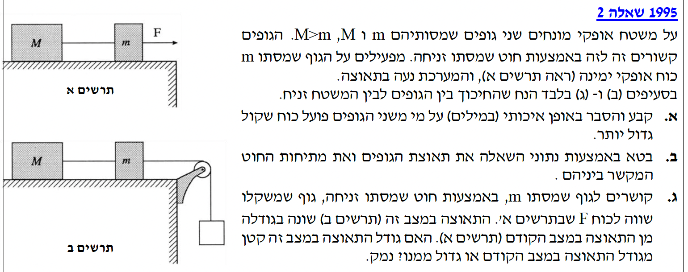
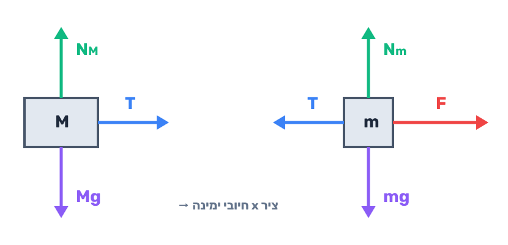
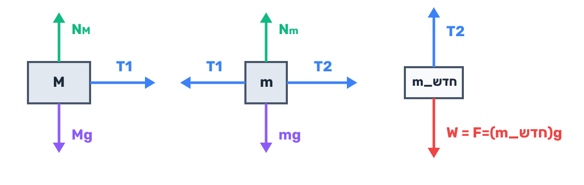

לקבוע ולהסביר איכותית (במילים) על איזה משני הגופים פועל כוח שקול (\(\Sigma F\)) גדול יותר.
מכיוון שהגופים קשורים זה לזה באמצעות חוט מתוח, שניהם נעים באותה מערכת ובעלי תאוצה זהה בגודלה, אותה נסמן באות \(a\).
על פי החוק השני של ניוטון, הכוח השקול הפועל על גוף שווה למכפלת מסתו בתאוצתו. לכן נוכל לרשום את הכוח השקול הפועל על כל גוף בנפרד:
מכיוון שנתון לנו כי \(M > m\), והתאוצה \(a\) חיובית וזהה לשני הגופים, בהכרח נובע אי-השוויון הבא:
לבטא את תאוצת המערכת \(a\) ואת מתיחות החוט המקשר \(T\) באמצעות הפרמטרים הנתונים: \(M\), \(m\), \(F\).
נשרטט תחילה תרשים כוחות (FBD) עבור כל גוף בנפרד:

נבחר ציר \(x\) אופקי הפונה ימינה (כיוון התנועה). מכיוון שאין תנועה בציר האנכי, אנו נתמקד במשוואות הכוחות לאורך ציר ה-\(x\).
עבור הגוף השמאלי (מסה \(M\)), הכוח היחיד הפועל בכיוון האופקי הוא כוח המתיחות \(T\):
עבור הגוף הימני (מסה \(m\)), פועל הכוח \(F\) ימינה, וכוח המתיחות \(T\) שמאלה:
כדי למצוא את התאוצה, נחבר את שתי המשוואות (משוואה 1 ומשוואה 2). פעולה זו תגרום למתיחות \(T\) (שהיא כוח פנימי במערכת) להצטמצם:
כעת, כדי למצוא את מתיחות החוט \(T\), נציב את ביטוי התאוצה שמצאנו חזרה למשוואה (1):
לקבוע האם גודל התאוצה החדשה (בתרשים ב', נסמנה כ-\(a_B\)) קטן או גדול מגודל התאוצה הקודמת (בתרשים א', נסמנה כ-\(a_A\)), ולנמק.
נשרטט את תרשימי הכוחות (FBD) עבור שלושת הגופים במערכת החדשה:

במערכת החדשה ישנם שלושה גופים המאיצים יחד (נסמן את התאוצה החדשה ב-\(a_B\)). נרשום את משוואות הכוחות לכל גוף בנפרד בכיוון התנועה:
נציב את הנתון \(W = F\) ואת המסה \(m_{new} = \frac{F}{g}\) במשוואת הגוף התלוי:
נחבר את שלוש המשוואות יחד. המתיחויות השונות מצטמצמות והכוח החיצוני המניע את המערכת כולה נותר בלבד:
נשווה את התאוצה החדשה \(a_B\) לתאוצה הקודמת \(a_A\) שמצאנו בסעיף ב':
המונה בשני המקרים זהה (\(F\)), אולם המכנה בביטוי עבור \(a_B\) גדול יותר מאשר המכנה בביטוי עבור \(a_A\) בגלל הוספת המסה \(\frac{F}{g}\). כאשר המכנה גדול יותר, ערך השבר כולו קטן יותר.